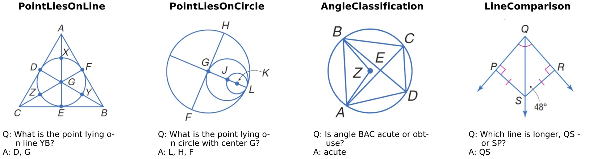
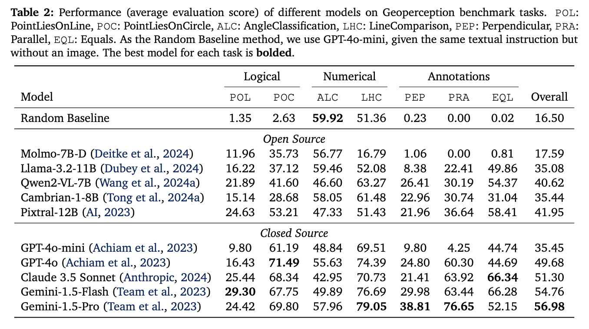
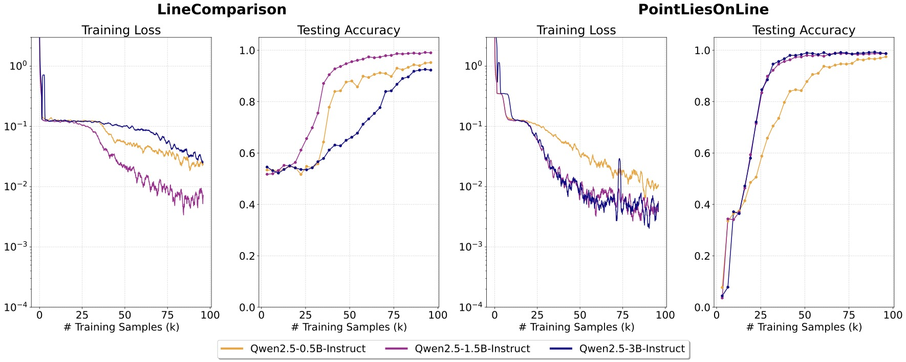
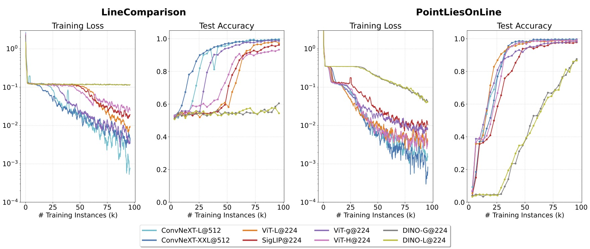
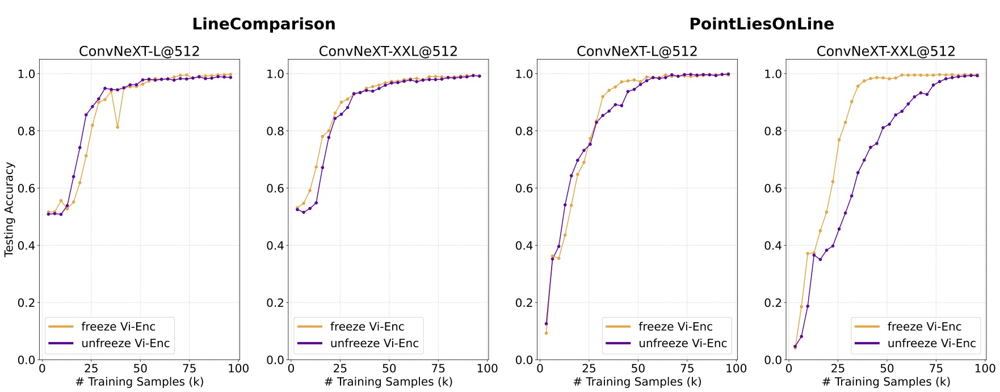
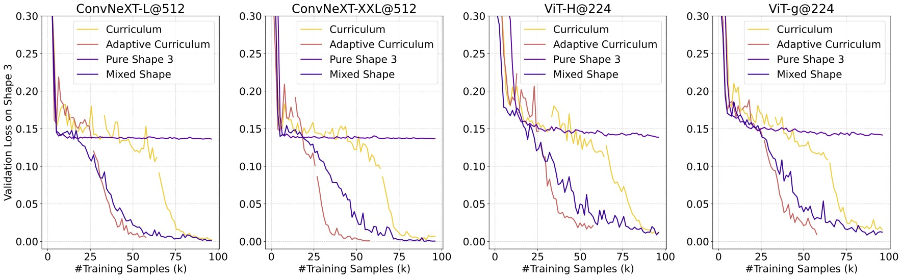

Classical decision theory has helped humans make rational decisions for decades. Can it do the same for Large Language Models (LLMs)? DeLLMa (pronouced dilemma) is a Decision-making Large Language Model assistant, which utilizes the power of Large Language Models and Classical Decision Theory to help LLMs make decisions under uncertainty.

Abstract
MLLMs have made rapid progress in recent years, yet continue to struggle with low-level visual perception (LLVP)---particularly the ability to accurately describe the geometric details of an image. This capability is crucial for applications in areas such as robotics, medical image analysis, and manufacturing. In this paper, we first introduce Geoperception, a benchmark designed to evaluate an MLLM’s ability to accurately transcribe 2D geometric information from an image. Using this benchmark, we demonstrate the limitations of leading MLLMs, and then conduct a comprehensive empirical study to explore strategies for improving their performance on geometric tasks. Our findings highlight the benefits of certain model architectures, training techniques, and data strategies, including the use of high-fidelity synthetic data and multi-stage training with a data curriculum. Notably, we find that a data curriculum enables models to learn challenging geometry understanding tasks which they fail to learn from scratch. Leveraging these insights, we develop Euclid, a family of models specifically optimized for strong low-level geometric perception. Although purely trained on synthetic multimodal data, Euclid shows strong generalization ability to novel geometry shapes. For instance, Euclid outperforms the best closed-source model, Gemini-1.5-Pro, by up to 58.56% on benchmark tasks and 10.65% across the tasks.
Project Overview
We aim to study the challenges of LLVP in MLLMs, take steps to understand the root cause of their performance, and improve the models' capabilities in this area.
Our contribution consists of a complete package of evaluation benchmarks, synthetic data generation pipeline, and a family of models specifically optimized for strong low-level geometric perception.
- Geoperception Benchmark: We introduce a new benchmark dataset, Geoperception, derived from the Geometry-3K corpus, specifically designed to evaluate MLLMs' ability to accurately perceive surface-level geometric information without requiring complex inference or reasoning. Our benchmark reveals shortcomings in precise geometric perception across all leading vision-language MLLMs, both closed and open-source.
- Empirical Study and Synthetic Data Engine: To investigate the root cause of this performance, we conduct a detailed empirical exploration of MLLM architecture and training strategies. To aid in our investigation, we develop a synthetic data engine capable of generating high-fidelity visual descriptions of geometric elements. This study leads to key insights, such as the importance of certain architectural choices and the use of curriculum-based, multi-stage training with progressively more complex visual descriptions for improving low-level visual perception.
- Euclid Model: Leveraging the insights from our exploration and our synthetic data engine, we train Euclid, a series of MLLMs tailored for high-quality geometric LLVP. Although purely trained on synthetic multimodal data with simple geometry shapes, Euclid generalizes strongly to the real-world geometry images from Geoperception benchmark, for instance, outperforming the best closed-source model, Gemini-1.5-Pro, by up to 58.56% on certain benchmark tasks and 10.65% across the tasks.
Geoperception Benchmark
Geoperception is sourced from the Geometry-3K corpus, but undergoes an additional filtering process with GPT-4o-mini to ensure the presence of all geometric elements in the image. Four examples from Geoperception are shown below:

We evaluate leading open- and closed-source MLLMs, and report accuracy below. Despite the simplicity of Geoperception for humans, it remains a considerable challenge for even the most advanced commercial MLLMs. Closed-source models generally outperform open-source models.

Empirical Study on MLLM Design Space
We hypothesize the inability of today's MLLMs to effectively perceive basic geometric annotations and relationships stems from two factors:
- The lack of high-fidelity geometric visual perception training data.
- The problem of their model architectures and training strategy.
Lesson 1: Under the same training dataset, scaling LLM sizes does not lead to better performance.
We first vary the sizes of LLMs, Qwen-2.5~\citep{qwen2.5} in a range of 0.5B, 1.5B, and 3B while keep other components consistent. The result is shown below. We do not observe an obvious trend that larger LLMs can learn such low-level visual perception task faster or better. Moving forward, we will use Qwen-2.5-1.5B to continue our exploration.

Lesson 2: CNN architecture performs better than ViT.
We then study the choice of visual encoder architectures, including two families of architectures: Vision Transformer (ViT) and ConvNeXT; as well as two visual representation learning objectives: language-supervised learning and self-supervised learning. ConvNeXT-Large shows superior learning performance with the vision transformers which are 3-5 times larger.

Lesson 3: Tuning vision encoder does not provide significant help.
We next study the effect of tuning versus freezing the visual encoder. Below, we show the testing accuracy curves of tuning and freezing visual encoders. We find that compared with using a frozen encoder, tuning the visual encoder does not help the model learn low-level geometry relationships faster or better. In what follows, we will freeze the encoder for simplicity.

Lesson 4: Curriculum learning unleashes full potential.
We train the model sequentially from simple to more complex shapes and compare testing accuracy just on hard level tasks. During training, we monitor the model's performance and dynamically adjust the distribution of training data (i.e., the curriculum stage) based on this performance.

BibTeX
@misc{liu2024dellma,
title={{D}e{L}{L}{M}a: {D}ecision {M}aking {U}nder {U}ncertainty with {L}arge {L}anguage {M}odels},
author={Ollie Liu$^*$ and Deqing Fu$^*$ and Dani Yogatama and Willie Neiswanger},
year={2024},
eprint={2402.02392},
archivePrefix={arXiv},
primaryClass={cs.AI}
}